这篇文章主要参考了spring官方文档的第七章
一、IoC简介
IoC的全称是Inversion of Control（控制反转），“控制反转”这个词理解起来有点别扭，所以后来人们就换了一个词DI（dependency injection依赖注入）来描述了。说白了就是用一个“大工厂”把所有的bean都管理起来，要用的时候就从这个“大工厂”里面拿出来。
二、整体流程

编写bean的配置信息
参考spring官方文档的7.2.1 Configuration metadata章节
创建XML文件放到classpath下，文件名可以随意指定（ApplicationContext.xml这个名称比较常用），文件的格式如官网所示：

创建“大工厂”
参考spring官方文档的7.2.2 Instantiating a container章节
直接上官方的代码
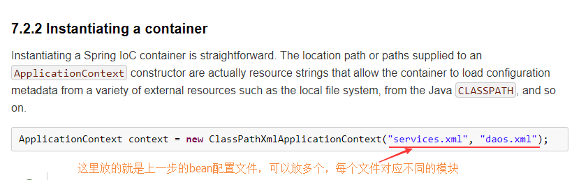
从“大工厂”中取出bean来使用
参考spring官方文档的7.2.3 Using the container章节
直接上官方的代码
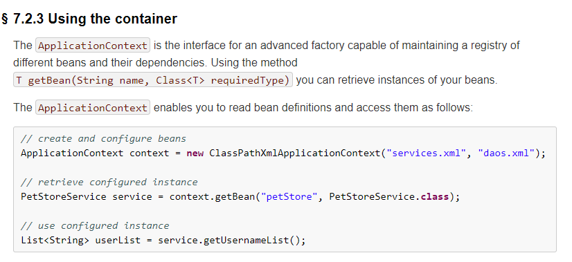
三、bean的实例化（三种方式）
参考spring官方文档的7.3.2 Instantiating beans章节
通过构造器的方式实例化bean（最常用的方式）
先看一下官方文档的说明
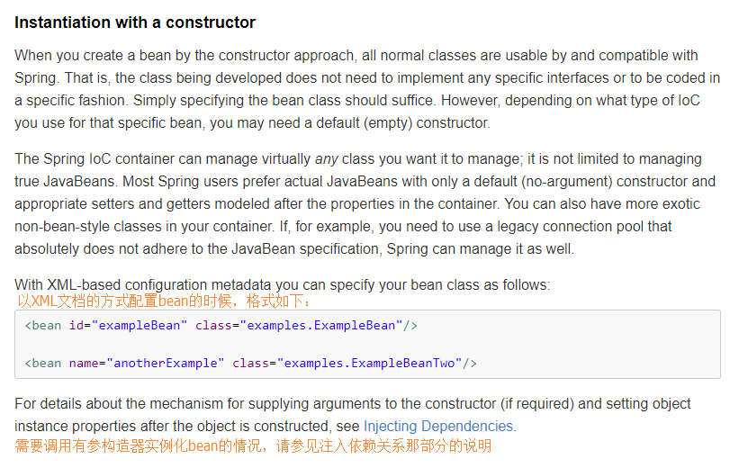
请注意：XML文档的配置如上图所示，bean那边有个强制性要求就是一定要提供无参构造器（如果一定要以有参构造器的方式实例化bean，那么就会涉及到注入的问题，要参考注入方法说明）
通过静态工厂的方式实例化bean（不常用，了解）
直接看一下官方文档的说明
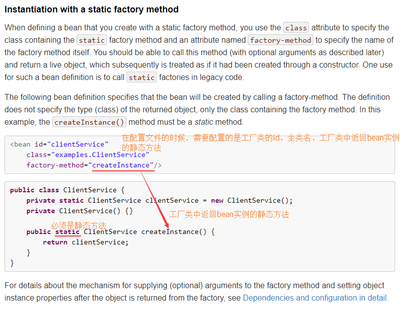
通过静态工厂的方式实例化bean的时候，拿bean是通过工厂类对应的id号来拿的，如下图：
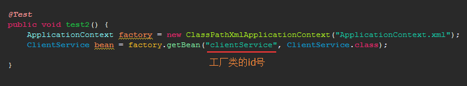
请注意：工厂类那边有个强制性要求就是一定要提供无参构造器（如果一定要以有参构造器的方式实例化bean，那么就会涉及到注入的问题，要参考注入方法说明）
通过实例工厂的方式实例化bean（不常用，了解）
直接看一下官方文档的说明
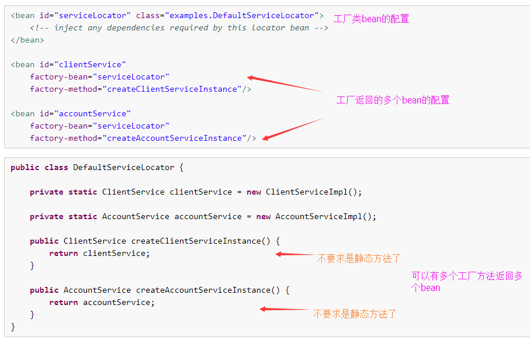
通过实例工厂的方式实例化bean的时候，拿bean是通过最终工厂类生产出来的bean对应的id号来拿的，如下图：
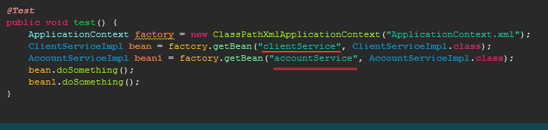
请注意：工厂类那边有个强制性要求就是一定要提供无参构造器（如果一定要以有参构造器的方式实例化bean，那么就会涉及到注入的问题，要参考注入方法说明）
四、依赖以及依赖注入（这一章主要讲解bean之间的依赖关系，以及这种依赖关系是如何注入到bean中）
总览
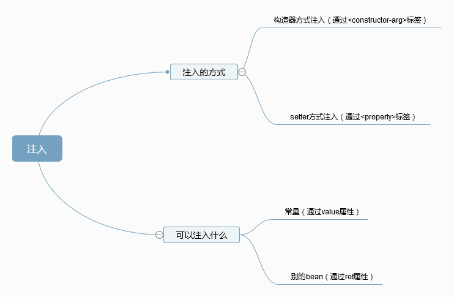
基于构造函数的注入（Constructor-based dependency injection）
直接上官方文档例子
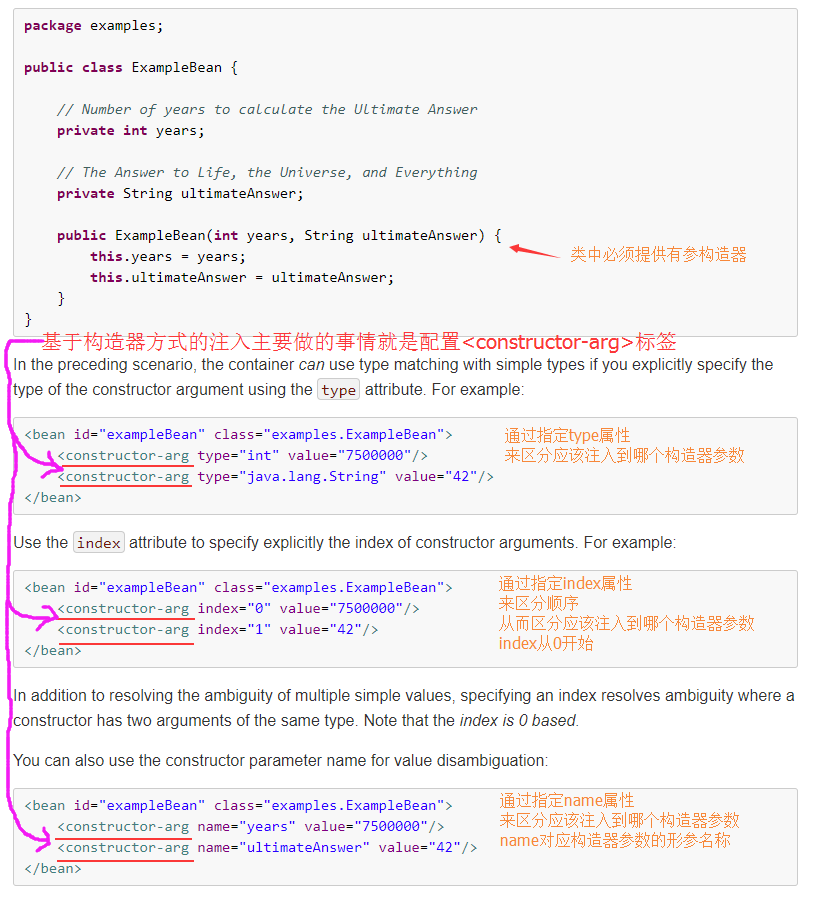
基于setter方法的注入（Setter-based dependency injection）
直接上官方文档例子
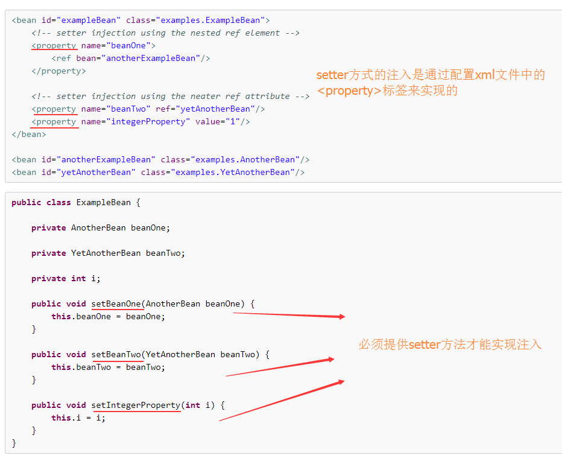
五、延迟加载
直接看官方说明吧，呵呵
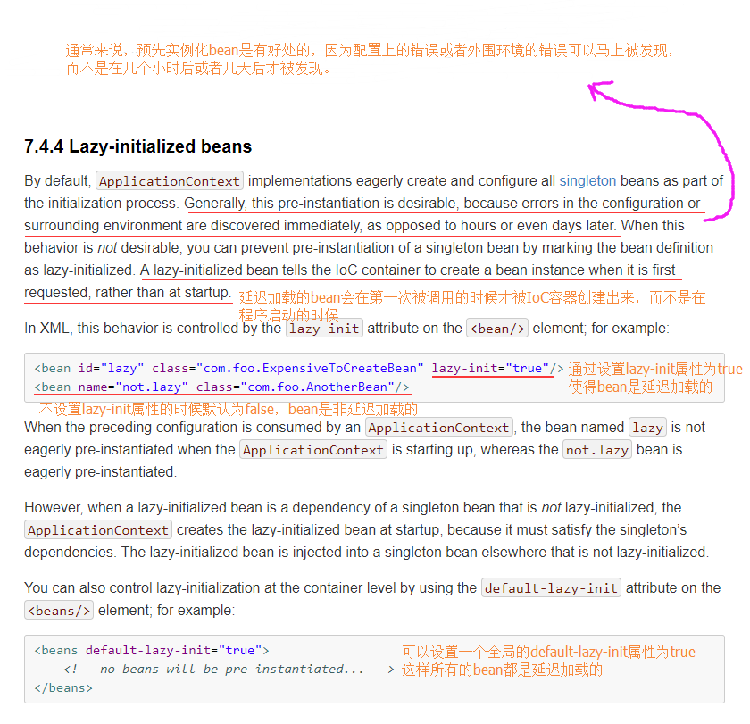
六、bean的域
“bean的域”这种叫法其实不太好理解，有些人又称之为“bean的作用域”，但是我个人觉得叫“bean的作用域”这种翻译有点牵强，或者说无法从字面上的意思去理解它背后的含义。